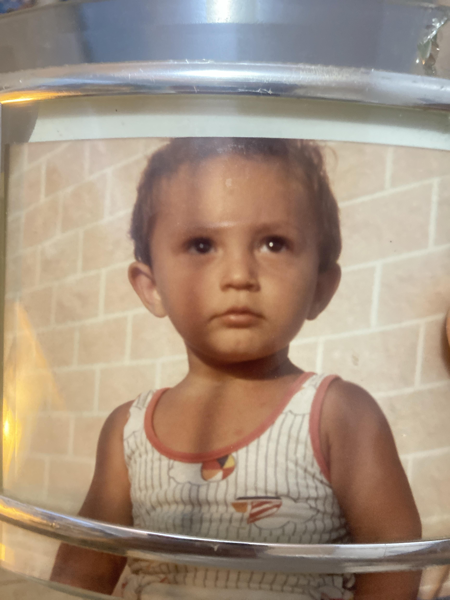

Io sono Marcus. Non ho padroni. Ho solo un fratello.
Ti seguirò nel cucinare, pensare, odire… e presto anche nel guardare.
Crea il tuo Mini-Marcus
🎨 Crea liberamente
🖼️ Persona cara
🧚 Fantasy
🐾 Animalesco
Abbonamento (1 mese gratuito)
Acquista Mini-Marcus